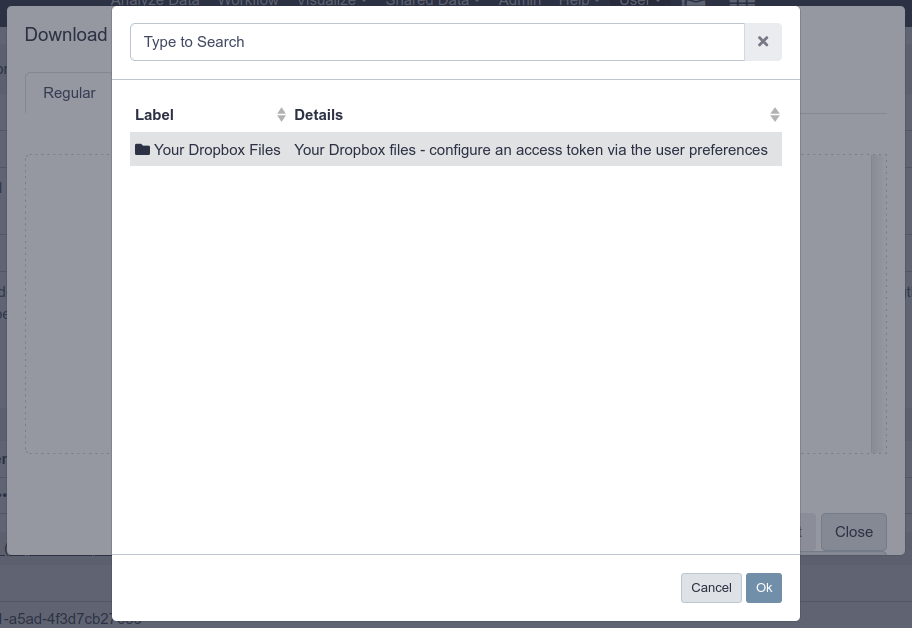

Distributed Object Storage
OverviewQuestions:
Objectives:
How does Galaxy locate data?
How can I have Galaxy use multiple storage locations?
Requirements:
Setup Galaxy with both the Hierarachical and Distributed Object Storages
- slides Slides: Ansible
- tutorial Hands-on: Ansible
- slides Slides: Galaxy Installation with Ansible
- tutorial Hands-on: Galaxy Installation with Ansible
Time estimation: 30 minutesSupporting Materials:Published: Jan 28, 2019Last modification: Jun 25, 2024License: Tutorial Content is licensed under Creative Commons Attribution 4.0 International License. The GTN Framework is licensed under MITpurl PURL: https://gxy.io/GTN:T00016rating Rating: 4.5 (0 recent ratings, 2 all time)version Revision: 27
You may find that your Galaxy files directory has run out of space, but you don’t want to move all of the files from one filesystem to another. One solution to this problem is to use Galaxy’s hierarchical object store to add an additional file space for Galaxy.
Alternatively, you may wish to write new datasets to more than one filesystem. For this, you can use Galaxy’s distributed object store.
Expanding Storage
This tutorial assumes you have done the “Ansible for installing Galaxy” tutorial, it references the base configuration set up in that tutorial in numerous places.
Agenda
Warning: switching object store types will cause issuesDo not run this tutorial on your production instance! We will switch between object stores during this tutorial which has serious implications for production servers.
Hierarchical Object Store
First, note that your Galaxy datasets have been created thus far in the directory /data, due to galaxy_config: galaxy: file_path. In some cases, we run out of storage in a particular location. Galaxy allows us to add additional storage locations where it will create new datasets, while still looking in the old locations for old datasets. You will not have to migrate any of your datasets, and can just “plug and play” with new storage pools.
Hands-on: Adding Hierarchical Storage
Open your group variables file and set the
object_store_config_filevariable:galaxy_config: galaxy: object_store_config_file: "{{ galaxy_config_dir }}/object_store_conf.xml"In your group variables file, add it to the
galaxy_config_templatessection:galaxy_config_templates: - src: templates/galaxy/config/object_store_conf.xml.j2 dest: "{{ galaxy_config.galaxy.object_store_config_file }}"Create and edit
templates/galaxy/config/object_store_conf.xml.j2with the following contents:<?xml version="1.0"?> <object_store type="hierarchical"> <backends> <backend id="newdata" type="disk" order="0"> <files_dir path="/data2" /> <extra_dir type="job_work" path="/data2/job_work_dir" /> </backend> <backend id="olddata" type="disk" order="1"> <files_dir path="/data" /> <extra_dir type="job_work" path="/data/job_work_dir" /> </backend> </backends> </object_store>Add a
pre_taskin your playbookgalaxy.ymlfile to create the/data2folder using the file module.- name: Create the second storage directory file: owner: galaxy group: galaxy path: /data2 state: directory mode: '0755'We’ve hardcoded the user/group because creating a storage directory is unusual. In normal practice someone provides you with an NFS mount and you will simply point your Galaxy there.
Run the playbook and restart Galaxy
Run a couple of jobs after Galaxy has restarted.
QuestionWhere is the data now stored?
You should see
/data2in theFull Path, if not, something went wrong. Check that your “order” is correct
Distributed Object Store
Rather than searching a hierarchy of object stores until the dataset is found, Galaxy can store the ID (in the database) of the object store in which a dataset is located when the dataset is created. This allows Galaxy to write to more than one object store for new datasets.
Hands-on: Distributed Object Store
Edit your
templates/galaxy/config/object_store_conf.xml.j2file and replace the contents with:<?xml version="1.0"?> <object_store type="distributed"> <backends> <backend id="newdata" type="disk" weight="1"> <files_dir path="/data2"/> <extra_dir type="job_work" path="/data2/job_work_dir"/> </backend> <backend id="olddata" type="disk" weight="1"> <files_dir path="/data"/> <extra_dir type="job_work" path="/data/job_work_dir"/> </backend> </backends> </object_store>Run the playbook, restart Galaxy
Run 4 or so jobs, and check where the output appear. You should see that they are split relatively evenly between the two data directories.
Sites like UseGalaxy.eu use the distributed object store in order to balance dataset storage across 10 different storage pools.
More information can be found in the sample file.
Yes! You must write your own dynamic job handler code to handle this. See PR#6552 and PR#10233
If you implement something like this, please let the GTN know with some example code, and we can include this as a training module for everyone.
Warning: switching object store types will cause issuesWe have switched between two different object stores here, but this is not supported. If you need to do this, you will need to update datasets in Galaxy’s database. Any datasets that were created as hierarchical will lack the
object_store_id, and you will need to supply the correct one. Do not just blindly copy these instructions, please understand what they do before running them and talk to us on Gitter for more help
Move the datasets to their new location:
sudo -u galaxy rsync -avr /hierarchical/000/ /distributed/000/Update the database:
sudo -Hu galaxy psql galaxy -c "UPDATE dataset SET object_store_id='data';"Restart your Galaxy
S3 Object Store
Many sites have access to an S3 service (either public AWS, or something private like Swift or Ceph), and you can take advantage of this for data storage.
we will set up a local S3-compatible object store, and then talk to the API of this service.
Hands-on: Setting up an S3-compatible Object Store
Edit your
requirements.ymlfile and add:- src: atosatto.minio version: v1.1.0
ansible-galaxy install -p roles -r requirements.ymlEdit your group variables to configure the object store:
minio_server_datadirs: ["/minio-test"] minio_access_key: "my-access-key" minio_secret_key: "my-super-extra-top-secret-key"Edit your playbook and add the minio role before
galaxyproject.galaxy:- atosatto.minioGalaxy will need to use the bucket, and will want it to be there when it boots, so we need to setup the object store first.
Edit the
templates/galaxy/config/object_store_conf.xml.j2, and configure the object store as one of the hierarchical backends. The object store does not play nicely with the distributed backend during training preparation. Additionally, reset the orders of the disk backends to be higher than the order of the swift backend.@@ -1,13 +1,21 @@ <?xml version="1.0"?> - <object_store type="distributed"> + <object_store type="hierarchical"> <backends> - <backend id="newdata" type="disk" weight="1"> + <backend id="newdata" type="disk" order="1"> <files_dir path="/data2"/> <extra_dir type="job_work" path="/data2/job_work_dir"/> </backend> - <backend id="olddata" type="disk" weight="1"> + <backend id="olddata" type="disk" order="2"> <files_dir path="/data"/> <extra_dir type="job_work" path="/data/job_work_dir"/> </backend> + <object_store id="swifty" type="swift" order="0"> + <auth access_key="{{ minio_access_key }}" secret_key="{{ minio_secret_key }}" /> + <bucket name="galaxy" use_reduced_redundancy="False" max_chunk_size="250"/> + <connection host="127.0.0.1" port="9091" is_secure="False" conn_path="" multipart="True"/> + <cache path="{{ galaxy_mutable_data_dir }}/database/object_store_cache" size="1000" /> + <extra_dir type="job_work" path="{{ galaxy_mutable_data_dir }}/database/job_working_directory_swift"/> + <extra_dir type="temp" path="{{ galaxy_mutable_data_dir }}/database/tmp_swift"/> + </object_store> </backends> </object_store>If you haven’t worked with diffs before, this can be something quite new or different.
If we have two files, let’s say a grocery list, in two files. We’ll call them ‘a’ and ‘b’.
Input: Old$ cat old
🍎
🍐
🍊
🍋
🍒
🥑Output: New$ cat new
🍎
🍐
🍊
🍋
🍍
🥑We can see that they have some different entries. We’ve removed 🍒 because they’re awful, and replaced them with an 🍍
Diff lets us compare these files
$ diff old new
5c5
< 🍒
---
> 🍍Here we see that 🍒 is only in a, and 🍍 is only in b. But otherwise the files are identical.
There are a couple different formats to diffs, one is the ‘unified diff’
$ diff -U2 old new
--- old 2022-02-16 14:06:19.697132568 +0100
+++ new 2022-02-16 14:06:36.340962616 +0100
@@ -3,4 +3,4 @@
🍊
🍋
-🍒
+🍍
🥑This is basically what you see in the training materials which gives you a lot of context about the changes:
--- oldis the ‘old’ file in our view+++ newis the ‘new’ file- @@ these lines tell us where the change occurs and how many lines are added or removed.
- Lines starting with a - are removed from our ‘new’ file
- Lines with a + have been added.
So when you go to apply these diffs to your files in the training:
- Ignore the header
- Remove lines starting with - from your file
- Add lines starting with + to your file
The other lines (🍊/🍋 and 🥑) above just provide “context”, they help you know where a change belongs in a file, but should not be edited when you’re making the above change. Given the above diff, you would find a line with a 🍒, and replace it with a 🍍
Added & Removed Lines
Removals are very easy to spot, we just have removed lines
--- old 2022-02-16 14:06:19.697132568 +0100
+++ new 2022-02-16 14:10:14.370722802 +0100
@@ -4,3 +4,2 @@
🍋
🍒
-🥑And additions likewise are very easy, just add a new line, between the other lines in your file.
--- old 2022-02-16 14:06:19.697132568 +0100
+++ new 2022-02-16 14:11:11.422135393 +0100
@@ -1,3 +1,4 @@
🍎
+🍍
🍐
🍊Completely new files
Completely new files look a bit different, there the “old” file is
/dev/null, the empty file in a Linux machine.$ diff -U2 /dev/null old
--- /dev/null 2022-02-15 11:47:16.100000270 +0100
+++ old 2022-02-16 14:06:19.697132568 +0100
@@ -0,0 +1,6 @@
+🍎
+🍐
+🍊
+🍋
+🍒
+🥑And removed files are similar, except with the new file being /dev/null
--- old 2022-02-16 14:06:19.697132568 +0100
+++ /dev/null 2022-02-15 11:47:16.100000270 +0100
@@ -1,6 +0,0 @@
-🍎
-🍐
-🍊
-🍋
-🍒
-🥑Run the playbook.
Galaxy should now be configure to use the object store!
When the playbook is done, upload a dataset to Galaxy, and check if it shows up in the bucket:
$ sudo ls /minio-test/galaxy/000/ dataset_24.dat
Dropbox
Dropbox is a well-known cloud storage service where you can store and share files with anyone. As of 20.09, Galaxy has support for a couple of different file storage backends, including NextCloud (via webdavfs) and Dropbox.
This tutorial will help you setup the connection between Galaxy and Dropbox, allowing your users to add their account details and then access their Dropbox data within Galaxy
Hands-on: Configure Galaxy to access the Dropbox service
If the folder does not exist, create
templates/galaxy/confignext to yourgalaxy.ymlplaybook.Input: Bashmkdir -p templates/galaxy/configCreate
templates/galaxy/config/file_sources_conf.ymlwith the following contents:- type: dropbox id: dropbox label: Your Dropbox Files doc: Your Dropbox files - configure an access token via the user preferences accessToken: ${user.preferences.get('dropbox|access_token', '') if $user.preferences else ''}Create
templates/galaxy/config/user_preferences_extra_conf.ymlwith the following contents:preferences: dropbox: description: Your Dropbox account inputs: - name: access_token label: Dropbox access token type: password required: FalseInform the
galaxyproject.galaxyrole of where you would like thefile_sources_conf.ymlanduser_preferences_extra_conf.ymlto reside, by setting it in yourgroup_vars/galaxyservers.yml:--- a/group_vars/galaxyservers.yml +++ b/group_vars/galaxyservers.yml @@ -35,6 +35,8 @@ galaxy_config: tool_data_path: "{{ galaxy_mutable_data_dir }}/tool-data" job_config_file: "{{ galaxy_config_dir }}/job_conf.yml" + file_sources_config_file: "{{ galaxy_config_dir }}/file_sources_conf.yml" + user_preferences_extra_conf_path: "{{ galaxy_config_dir }}/user_preferences_extra_conf.yml"Deploy the new config files using the
galaxy_config_filesvar (also from thegalaxyproject.galaxyrole) in your group vars:--- a/group_vars/galaxyservers.yml +++ b/group_vars/galaxyservers.yml @@ -65,6 +67,12 @@ galaxy_config_templates: - src: templates/galaxy/config/job_conf.yml.j2 dest: "{{ galaxy_config.galaxy.job_config_file }}" +galaxy_config_files: + - src: files/galaxy/config/user_preferences_extra_conf.yml + dest: "{{ galaxy_config.galaxy.user_preferences_extra_conf_path }}" + - src: files/galaxy/config/file_sources_conf.yml + dest: "{{ galaxy_config.galaxy.file_sources_config_file }}" +Run the playbook. At the very end, you should see output like the following indicating that Galaxy has been restarted:
Input: Bashansible-playbook galaxy.ymlOutput: Output... RUNNING HANDLER [restart galaxy] **************************************** changed: [gat-88.training.galaxyproject.eu]
Now we are ready to configure a Galaxy’s user account to upload dataset from Dropbox to the Galaxy server.
Hands-on: Configure Galaxy to access the Dropbox service
Generate a Dropbox access token following the Dropbox Oauth guide
- Add the Dropbox access token in the Galaxy’s user preferences
- Go to https://<server>/user/information
- Here you will find the form user will fill in with his own Dropbox access token:
- Click the upload icon toward the top left corner. You will have a new “Choose remote files” button that will open the remote files windows with the link to reach your Dropbox files: 

{kind=link}